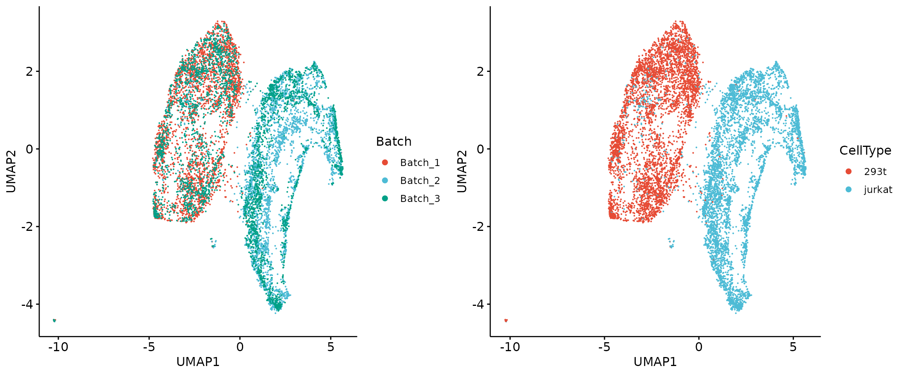
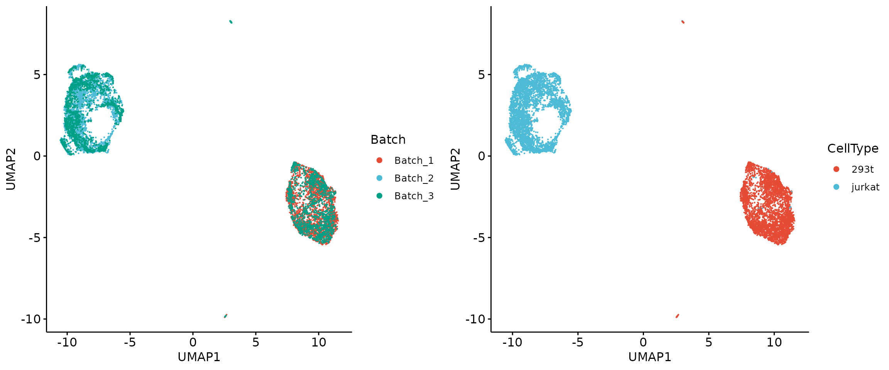

Supervised integration using SIGNAL
Yang Zhou
2024-06-06
Source:vignettes/Supervised_integration.Rmd
Supervised_integration.RmdIntroduction
SIGNAL integration requires at least one group variable, such as ‘cell type,’ ‘developmental stage,’ or ‘tissue origin,’ which is typically provided as metadata. Actually, SIGNAL only assumes homogeneity within subgroups under a given group variable.
If there is no additional group variable entirely, one can consider manually adding a ‘source’ variable which indicates whether the cells come from the same source. However, as mentioned before, if the dataset is highly heterogeneous, SIGNAL cannot effectively integrate the dataset. We introduce a metric, between-batch similarity, to quantify the homogeneity across batches within a dataset. A high between-batch similarity indicates homogeneity. In contrast, when between-batch similarity is low, indicating heterogeneity, SIGNAL integration with a manually added ‘source’ variable may not succeed. Next, we show this using the heterogeneous cell lines dataset.
Load data matrix and metadata
We demonstrate SIGNAL integration on a commonly used single-cell RNA sequencing (scRNA-seq) dataset of cell lines. The highly variable genes (HVGs) are already selected and are used to perform integration. The dataset is highly heterogeneous across batches, as we can see the cell type compositions of the dataset.
X = readRDS("/home/server/zy/group_scripts/datasets_preparation/Jurkat_293t/X.rds")
meta = readRDS("/home/server/zy/group_scripts/datasets_preparation/Jurkat_293t/meta.rds")
table(meta[, c("CellType", "Batch")])## Batch
## CellType Batch_1 Batch_2 Batch_3
## 293t 2885 0 1605
## jurkat 0 3258 1783We also compute the between-batch similarity.
batch_similarity <- function(data, meta, b_factor) {
scaled_data = SIGNAL:::scale_data(data)
b_ns = unique(meta[, b_factor])
b_means = sapply(b_ns, function(b) matrixStats::rowMedians(as.matrix(scaled_data[, which(meta[, b_factor] == b)] )))
colnames(b_means) = b_ns
b_means = scInt:::cosineNorm(b_means)
all_b_means = rowMeans(b_means)
mean(apply(b_means, 2, function(x) cor(x, all_b_means, method = 'pearson')))
}
print(round(batch_similarity(X, meta, 'Batch'), 2) )## [1] 0.51SIGNAL integration with a manually added ‘source’ variable
We manually add a ‘source’ variable for all cells in the data. SIGNAL cannot separate two cell types.
meta$Source = '0'
signal_emb = Run.gcPCA(X, meta, g_factor = "Source", b_factor = "Batch")## Run gcPCA!## gcPCA done!
signal_umap = as.data.frame(umap(t(signal_emb)))
colnames(signal_umap) = c("UMAP1", "UMAP2")
signal_umap = cbind.data.frame(meta, signal_umap)
p1 = ggscatter(signal_umap, x = "UMAP1", y = "UMAP2", size = 0.1, color = "Batch", palette = "npg", legend = "right") +
guides(colour = guide_legend(override.aes = list(size = 2)))
p2 = ggscatter(signal_umap, x = "UMAP1", y = "UMAP2", size = 0.1, color = "CellType", palette = "npg", legend = "right") +
guides(colour = guide_legend(override.aes = list(size = 2)))
plot_grid(p1, p2, align = 'h', axis = "b")
We then simulate batch labels to construct a homogeneous dataset and integrate it using SIGNAL using ‘source’ as the group variable.
meta$NewLabel = as.character(meta$Batch)
meta$NewLabel[which(meta$NewLabel %in% c('Batch_1', 'Batch_2'))] = 'Simulated Batch_1'
meta$NewLabel[which(meta$NewLabel == 'Batch_3')] = 'Simulated Batch_2'
signal_emb = Run.gcPCA(X, meta, g_factor = "Source", b_factor = "NewLabel")## Run gcPCA!## gcPCA done!
signal_umap = as.data.frame(umap(t(signal_emb)))
colnames(signal_umap) = c("UMAP1", "UMAP2")
signal_umap = cbind.data.frame(meta, signal_umap)
q1 = ggscatter(signal_umap, x = "UMAP1", y = "UMAP2", size = 0.1, color = "Batch", palette = "npg", legend = "right") +
guides(colour = guide_legend(override.aes = list(size = 2)))
q2 = ggscatter(signal_umap, x = "UMAP1", y = "UMAP2", size = 0.1, color = "CellType", palette = "npg", legend = "right") +
guides(colour = guide_legend(override.aes = list(size = 2)))
plot_grid(q1, q2, align = 'h', axis = "b")
SIGNAL integration for highly homogeneous datasets without prior information
To integrate the heterogeneous single-cell data without prior information, we recommend using additional unsupervised integration methods such as our previously proposed scInt and clustering techniques like k-means to create coarse cell labels. Then SIGNAL can be operated as a supervised integration method.
Session Info
## R version 4.2.3 (2023-03-15)
## Platform: x86_64-conda-linux-gnu (64-bit)
## Running under: Ubuntu 22.10
##
## Matrix products: default
## BLAS/LAPACK: /home/server/anaconda3/envs/zy/lib/libopenblasp-r0.3.21.so
##
## locale:
## [1] LC_CTYPE=en_US.UTF-8 LC_NUMERIC=C
## [3] LC_TIME=en_US.UTF-8 LC_COLLATE=en_US.UTF-8
## [5] LC_MONETARY=en_US.UTF-8 LC_MESSAGES=en_US.UTF-8
## [7] LC_PAPER=en_US.UTF-8 LC_NAME=C
## [9] LC_ADDRESS=C LC_TELEPHONE=C
## [11] LC_MEASUREMENT=en_US.UTF-8 LC_IDENTIFICATION=C
##
## attached base packages:
## [1] stats graphics grDevices utils datasets methods base
##
## other attached packages:
## [1] cowplot_1.1.1 ggpubr_0.6.0 ggplot2_3.4.4 uwot_0.2.2 irlba_2.3.5.1
## [6] Matrix_1.5-4.1 SIGNAL_1.0.0
##
## loaded via a namespace (and not attached):
## [1] backports_1.4.1 systemfonts_1.0.6 RcppEigen_0.3.4.0.0
## [4] plyr_1.8.9 igraph_1.3.1 lazyeval_0.2.2
## [7] sp_2.1-3 splines_4.2.3 BiocParallel_1.32.6
## [10] listenv_0.9.1 scattermore_1.2 digest_0.6.35
## [13] foreach_1.5.2 htmltools_0.5.8.1 fansi_1.0.6
## [16] magrittr_2.0.3 memoise_2.0.1 tensor_1.5
## [19] cluster_2.1.4 doParallel_1.0.17 ROCR_1.0-11
## [22] bigassertr_0.1.6 bigstatsr_1.5.12 globals_0.16.3
## [25] matrixStats_1.0.0 spatstat.sparse_3.0-2 pkgdown_2.0.7
## [28] colorspace_2.1-0 ggrepel_0.9.5 textshaping_0.3.7
## [31] xfun_0.43 dplyr_1.1.4 jsonlite_1.8.8
## [34] spatstat.data_3.0-1 progressr_0.13.0 survival_3.5-5
## [37] flock_0.7 zoo_1.8-12 iterators_1.0.14
## [40] glue_1.7.0 polyclip_1.10-4 gtable_0.3.5
## [43] leiden_0.4.3 car_3.1-2 future.apply_1.11.0
## [46] BiocGenerics_0.44.0 rfunctions_0.1 abind_1.4-5
## [49] scales_1.3.0 bigparallelr_0.3.2 spatstat.random_3.1-5
## [52] rstatix_0.7.2 miniUI_0.1.1.1 Rcpp_1.0.12
## [55] viridisLite_0.4.2 xtable_1.8-4 reticulate_1.26
## [58] bit_4.0.5 mclust_6.0.0 stats4_4.2.3
## [61] htmlwidgets_1.6.4 httr_1.4.7 RColorBrewer_1.1-3
## [64] Seurat_4.3.0.1 ff_4.0.12 ica_1.0-3
## [67] farver_2.1.1 pkgconfig_2.0.3 deldir_2.0-4
## [70] sass_0.4.9 utf8_1.2.4 labeling_0.4.3
## [73] tidyselect_1.2.1 rlang_1.1.3 reshape2_1.4.4
## [76] later_1.3.2 munsell_0.5.1 tools_4.2.3
## [79] cachem_1.0.8 cli_3.6.2 generics_0.1.3
## [82] broom_1.0.5 ggridges_0.5.4 evaluate_0.23
## [85] stringr_1.5.1 fastmap_1.1.1 goftest_1.2-3
## [88] yaml_2.3.8 ragg_1.2.7 knitr_1.46
## [91] fs_1.6.4 fitdistrplus_1.1-11 purrr_1.0.2
## [94] RANN_2.6.1 nlme_3.1-162 pbapply_1.7-2
## [97] future_1.33.1 sparseMatrixStats_1.10.0 mime_0.12
## [100] compiler_4.2.3 rstudioapi_0.15.0 scInt_1.0
## [103] plotly_4.10.4 png_0.1-8 ggsignif_0.6.4
## [106] spatstat.utils_3.1-0 tibble_3.2.1 bslib_0.7.0
## [109] stringi_1.8.3 highr_0.10 ps_1.7.6
## [112] desc_1.4.3 RSpectra_0.16-1 lattice_0.21-8
## [115] ggsci_3.0.0 vctrs_0.6.5 pillar_1.9.0
## [118] lifecycle_1.0.4 spatstat.geom_3.2-1 lmtest_0.9-40
## [121] jquerylib_0.1.4 RcppAnnoy_0.0.22 BiocNeighbors_1.16.0
## [124] data.table_1.15.4 httpuv_1.6.15 patchwork_1.1.2
## [127] R6_2.5.1 promises_1.3.0 KernSmooth_2.23-21
## [130] gridExtra_2.3 parallelly_1.37.1 codetools_0.2-19
## [133] MASS_7.3-60 withr_3.0.0 SeuratObject_4.1.3
## [136] sctransform_0.3.5 S4Vectors_0.36.2 parallel_4.2.3
## [139] grid_4.2.3 tidyr_1.3.1 rmio_0.4.0
## [142] rmarkdown_2.26 MatrixGenerics_1.10.0 carData_3.0-5
## [145] Rtsne_0.17 spatstat.explore_3.2-1 Biobase_2.58.0
## [148] shiny_1.8.1.1